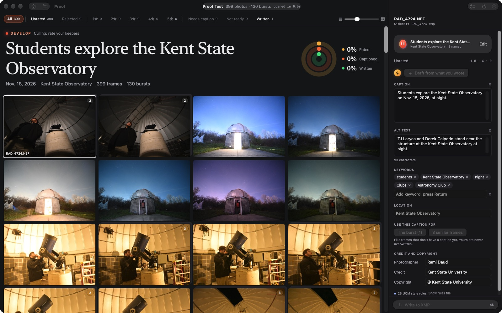
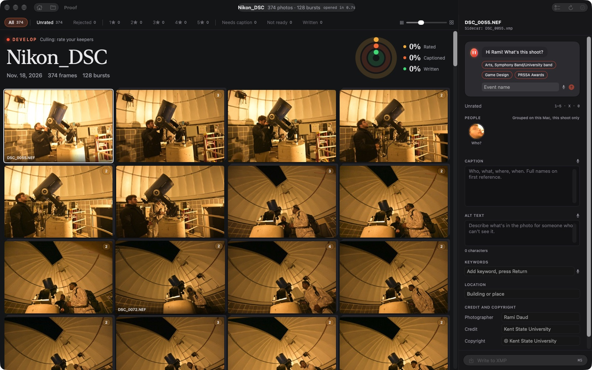
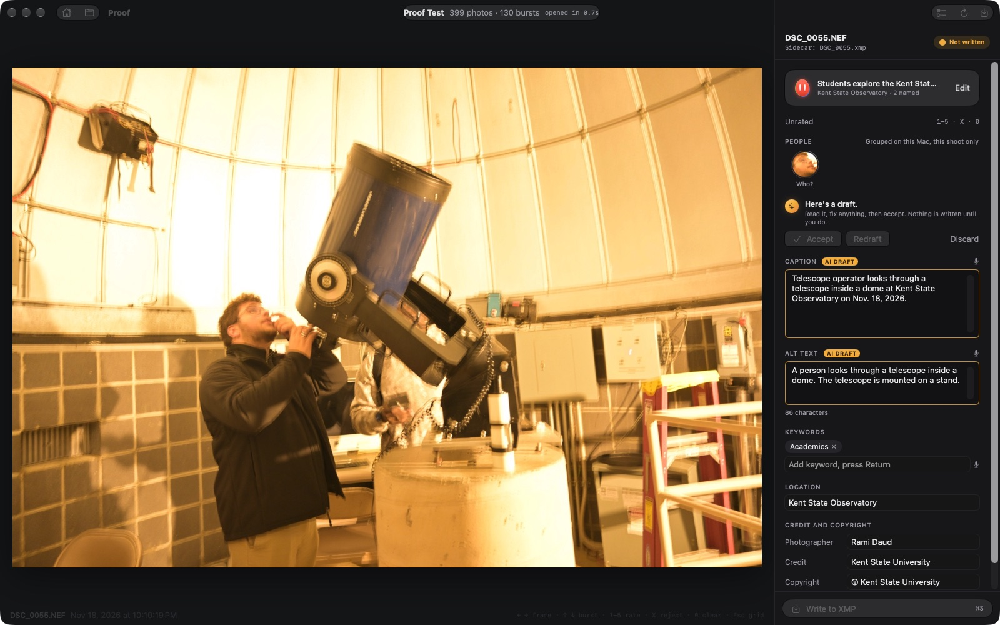
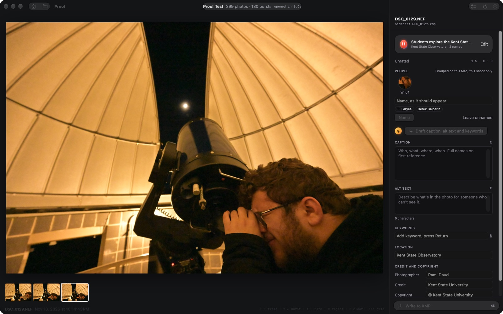
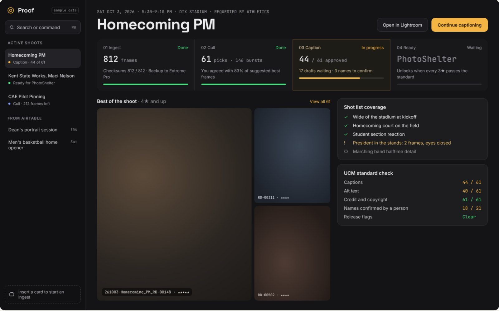
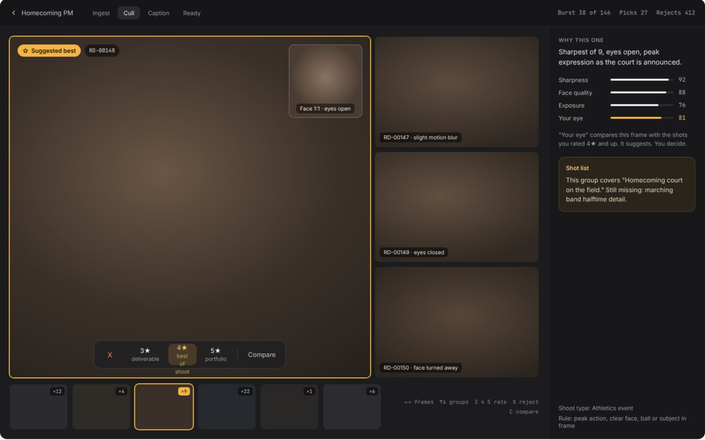
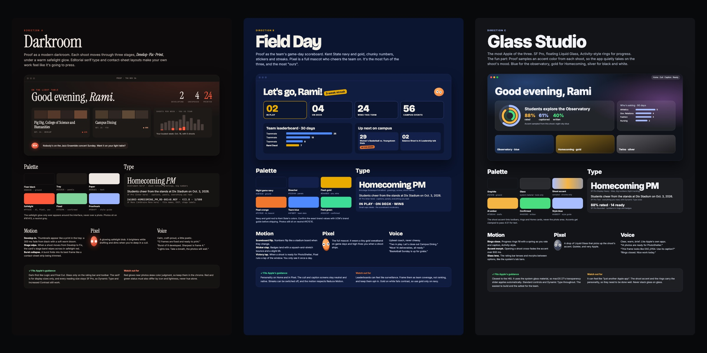
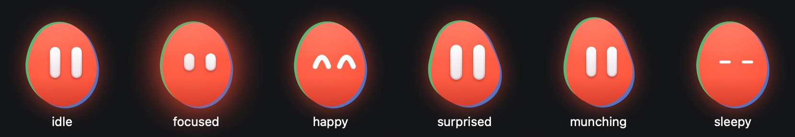

Case file 02 · Proof
The caption was ridiculous.
I tested AI on my own photo workflow, watched where it went wrong, and turned each mistake into a rule. Proof is the tool that came out of it, and the rules are the part I'd bring to any team.
- Test shoot
- 399
- Bursts found
- 130
- Team keywords
- 1,971
- Rounds of critique
- 8
- Originals touched
- 0
Why it exists
Every shoot started from an empty field.
On the night of Nov. 18, I photographed the sky over the Kent State University Observatory and came home with 399 frames, shot as raw and JPEG pairs. That part I love. What comes next is the part every university photographer knows: culling, captions, alt text, keywords and credits, frame after frame.
Our systems already know most of the answers. The assignment base in Airtable knows the job, the date and the place. The style guide knows how a date should be written. None of that reached the field I was typing into.
Since mid-October I'd been using Claude with a third-party bridge into Lightroom Classic, and it was working: case file 01 tells that story. Then on Nov. 17 the bridge kept dropping its connection and wouldn't come back, with error messages in Japanese and no fix in sight.
That was where the evaluation turned. A tool that touches a university photo archive has to fail safely, keep a record of what it changed, and never write anything without a person approving it. So instead of recommending the bridge, I wrote down what a tool for us would have to do, and worked with Claude Code to get it built to those rules.
Where the AI went wrong
Four mistakes, four rules.
Gold marks what a tool did. Red marks where a person decided.
It made things up
Tool didThe first caption drafts filled every gap with invention. I called one “kind of ridiculous,” and I meant it.
Rule nowTwo steps: the model first lists only what it can see in the frame, then writes from those facts and the assignment. If it can't see it, it can't say it.
It named people who weren't there
Tool didDrafts pulled names from the assignment into photos those people never appeared in. That's not a typo. It's a misidentification with someone's name on it.
Rule nowA name appears only after a person confirms it, and never in alt text. Faces are grouped on the Mac, in memory, for one shoot only.
It put “Kent State” everywhere
Tool didAn early version worked the university's name into every caption, whether it belonged or not. Small, until it's on 400 photos.
Rule nowA person controls it with one switch in the shoot brief, and outside work turns it off.
Its filter blocked harmless work
Tool didThe on-device model's default filter refused harmless summaries for a daily briefing.
Rule nowUse Apple's setting for transforming text the user supplies, so the model only reshapes what I give it and adds nothing of its own.
The tool suggests, a person decides, and the decision point can't be skipped.
How a shoot moves through Proof
Six steps, one gate.
- FolderRaw files open in a grid built from each file's own preview.
- BriefPixel asks about the job; Airtable fills in the rest.
- DraftCaption, alt text and keywords, drafted on the Mac.
- ApproveA person edits or accepts. Nothing writes before this.
- SidecarWritten beside the photo, backed up, read back to confirm.
- LightroomReads the sidecar. A Green label hands off to PhotoShelter.





How I worked with the AI
I never wrote the code. I judged it.
I'm a photographer, not a software engineer. My job was the one I'd want anyone on a team to have with an AI tool: say clearly what good looks like, check the output against real work, and push back when it's wrong.
- Plan firstThe first instruction was to read my written spec, check my Mac and propose a plan in plain language. No code until I approved.
- One thin pathThe first version only had to open a folder, rate, caption and write safely, and it had to pass a round trip through Lightroom.
- Real shootsMost changes came from using it on my own photos and saying what felt off.
- Self-checksClaude Code ran its own builds, looked at its own screens and measured where the app was slow before handing anything back.
- “That caption is kind of ridiculous.”
- “Feeling pretty dull and not very designerly.”
- “Navigation with keyboard seems to be broken again.”
- “Much simpler, cleaner, more sophisticated.”



Rami Daud · on building ProofThe AI could build almost anything I asked for. The hard part was knowing which caption was wrong, and why.
The human touch
Meet Pixel.
A photo tool doesn't need a mascot. But new AI tools can feel intimidating, and a little warmth goes a long way toward making one feel safe to try.
Pixel is safelight red for the darkroom, with green and blue edges that trail a beat behind, like a print slightly off register. He took more rounds of critique than any feature.
- Watches the cursor and changes mood with the work
- Click for a tip, right-click for encouragement
- Drop a folder on him and he eats it, then opens it

What it means for a team
The lessons aren't about photography.
- Start where the work already lives. Proof earns trust by using the assignment records, the 1,971-term vocabulary and the style guide the team already keeps, not a new list someone has to maintain.
- Build the checking in. Every rule above exists because a draft looked right and wasn't. The human check should be the easy path, not an extra step.
- Make the boring part disappear first. Nobody became a photographer to type keywords. Giving people that time back is how a tool gets adopted without a mandate.
- Decide where the AI runs. The heavy work runs on the Mac. An optional cloud step sends only caption text, never a photo, and stays off for university work until our policy is settled.
Where it stands. Proof is in private testing as a v0.1 build. Next, I'm putting it in front of the UCM photo team and turning our shared ratings and vocabulary into Smart Galleries in PhotoShelter, so our best work reaches campus partners without anyone curating by hand. Time saved will be measured once colleagues use it; until then this page claims none.